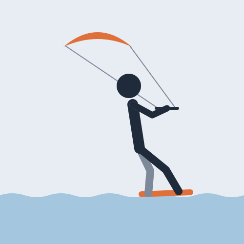
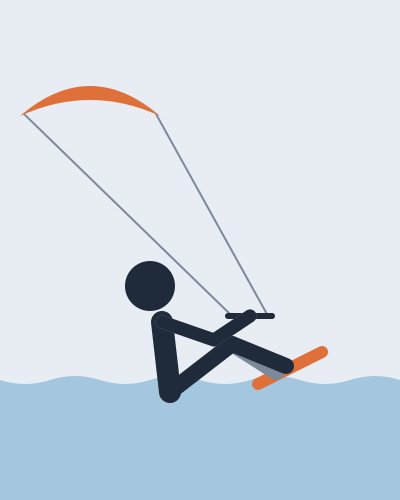
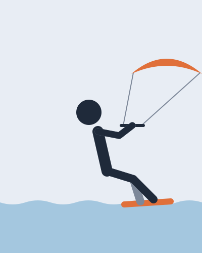
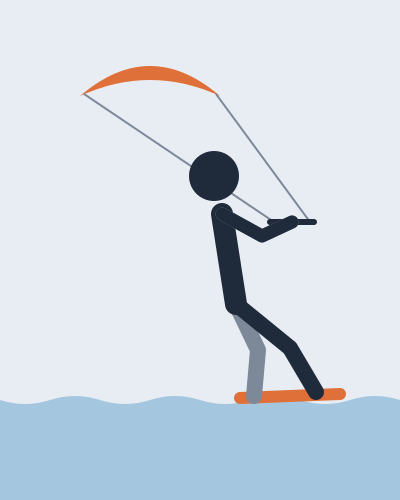
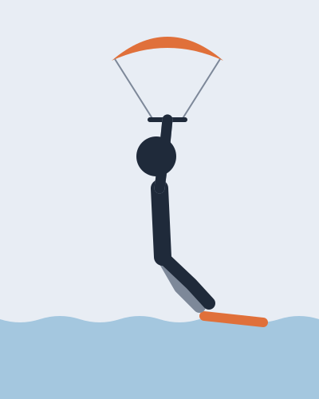

Getting up · 30 min

From sitting in the water to riding: one dive of the kite pulls you up onto the board.

1Knees bent, board across the wind on the feet, kite at 12 o'clock.

2look where you goDive the kite towards where you want to go and let it pull you over the board.

3Stand up, weight on the back foot, and bring the kite back to 11 or 1 o'clock.

The kite climbs and lifts you off the board. Push the bar out and dive again, lower.
A demo sheet: on yours, this note says what the video actually gives.